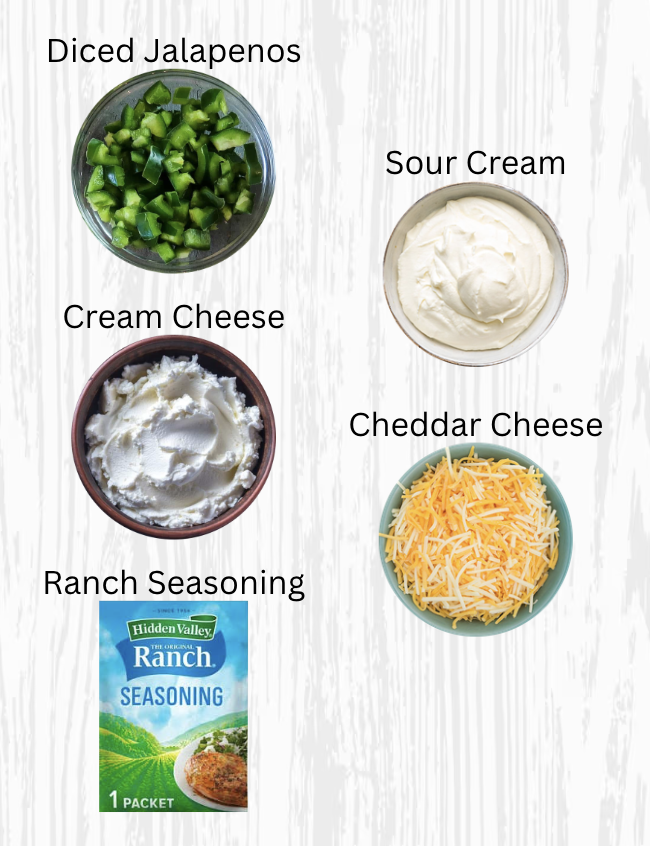
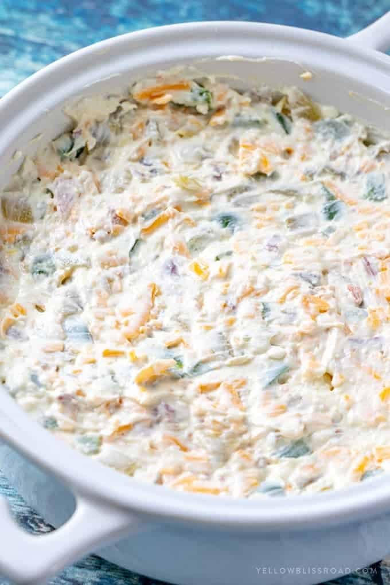

Description
This spicy, creamy jalapeño popper dip is perfect for parties! I've been making it for years and have adapted the original recipe to make it even more delicious!
-
Dietary:
Gluten-free, Vegetarian
-
Common Allergens:
Dairy
-
Prep Time / Total Time:
5 mins / 25-30 mins
-
Yield:
10-12 Servings
Things You'll Need
Ingredients
- 16 oz chive-flavored whipped cream cheese, softened
- 16 oz sour cream
- 2 cups shredded cheddar cheese (plus extra for topping)
- 4 jalapeños, diced
- 1 packet of ranch seasoning
Equipment
- 8-inch square Bbaking dish
- Large mixing Bbowl
- Large mixing spoon

Instructions
- Preheat the oven to 400°F.
- In a large mixing bowl, combine the cream cheese, sour cream, cheddar cheese, jalapeños, and ranch seasoning.
- Transfer the mixture to a baking dish and spread it evenly. Sprinkle extra cheddar cheese over the top.
- Bake for 20 minutes, or until the dip is bubbly and golden brown.
- Broil for an additional 2–3 minutes to achieve a nicely browned top. Watch carefully to prevent burning.
- Serve warm with tortilla chips or sliced vegetables.

FAQs
How should I store Jalapeño Popper Dip?
Store leftovers in an airtight container in the refrigerator for 3–4 days. Reheat in the microwave in 30-second intervals until heated through.
How far in advance can I prepare this dip?
You can prepare the dip up to a day in advance and store it covered in the refrigerator without baking. When you're ready, bake as directed and serve warm!
Is there anything I should prep in advance?
Dice the jalapeños and let the cream cheese soften ahead of time.
Can I use a different baking dish size?
An 8-inch square baking dish is recommended, but other similarly sized dishes will work, too. Keep an eye on the dip as it bakes, since cooking times may vary.
How can I control the spice level?
When preparing the jalapeños, remove the seeds and membranes for a milder dip. You can add some of the seeds back in to adjust the heat to your liking. The seeds from about one jalapeño add a slight kick that's suitable for a crowd. Jalapeños vary in size and heat, so feel free to adjust the quantity accordingly if yours are unusually large or small.
Is this the original recipe?
This recipe is adapted from The Food Network. Feel free to compare the two versions and borrow your favorite elements from each!